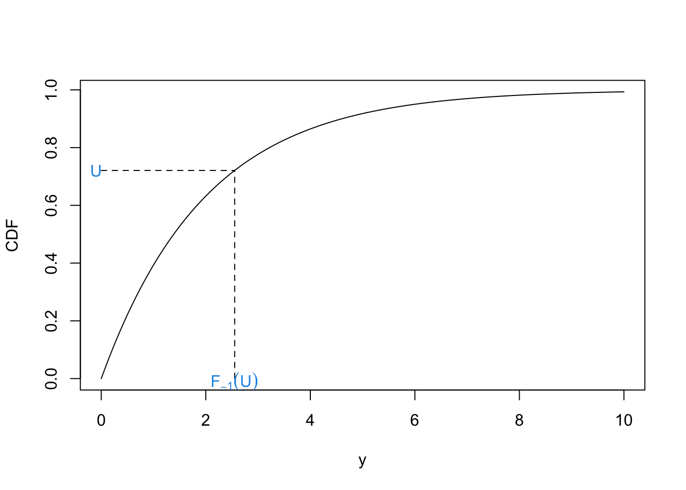
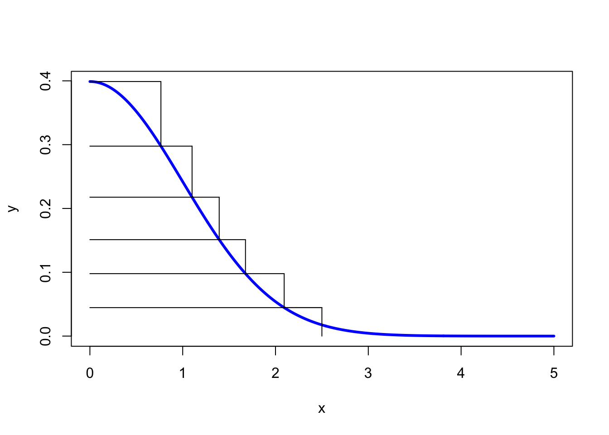

Chapter 4 Sampling
4.1 Uniform Random Numbers
What we won’t be doing in this module is generating true uniform random numbers. This is incredibly difficult and usually requires lots of expensive hardware. This is because computers aren’t good at being random, they require algorithmic instructions. True random number generation often uses physical methods, such as the radioactive decay of atoms, or atmospheric noise.
Throughout this module, we will be using R’s built in random number generation. This is a pseudo random number generator that has excellent random properties, but will eventually repeat. A basic random number generation tool that we will repeatedly use in the module involves sampling from a uniform distribution on the unit interval, which can be done in R using
## [1] 0.093711844.2 Inverse Transform Sampling
Suppose we want to sample from a non-uniform one-dimensional distribution. The inverse transform theorem allows us to do this using the distribution’s inverse function.
Definition 4.1 Let \(X\) be a real-valued random variable with a distribution function \(F\). Then the inverse function of a distribution function \(F\), denoted \(F^{-1}\), is defined for all \(u \in (0, 1)\) by \[ F^{-1}(u) = \inf\{x \in\mathbb{R} : F(x) > u\}. \]
Theorem 4.1 Let \(F :\mathbb{R} \rightarrow [0, 1]\) be a continuous distribution function, \(U \sim U[0, 1]\) and \(Y = F^{-1}(U)\). Then \(Y\) has distribution function \(F\).
Proof. We have \[ \mathbb{P}(Y \leq a) = \mathbb{P}(F^{-1}(U) \leq a) = \mathbb{P}(\inf\{x \in\mathbb{R} : F(x) > u\} \leq a). \] Since \(\inf\{x \in\mathbb{R} : F(x) > u\} \leq a\) can only hold if \(F(a) \geq U\), we have \[ \mathbb{P}(Y \leq a) = \mathbb{P}(F(a)\geq U) \] As \(U \sim U[0, 1]\), we have \(\mathbb{P}(F(a)\geq U) = F(a)\).
This theorem says that if we have a random variable \(U \sim U[0, 1]\) and we want to get \(Y \sim F\), then we can use \(F^{-1}(U)\). Viewing this theorem graphically can provide a much more intuitive understanding.
Example 4.1 We would like to sample from an exponential distribution with rate \(\lambda\), i.e. \(Y ~ \sim \hbox{Exp}(\lambda)\). The density function is given by
\[ \pi(y \mid \lambda) = \begin{cases} \lambda e^{\lambda y} & y \geq 0 \\ 0 & \text{otherwise.} \end{cases} \]
The distribution function can be derived by \[\begin{align*} F(y \mid \lambda) &= \int_0^y \lambda e^{\lambda t}\,dt \\ & = 1 - e^{\lambda y}. \end{align*}\] Finally, the inverse function is given by \[ F^{-1}(y \mid \lambda) = -\frac{1}{\lambda}\log(1-y). \] Therefore, if \(U \sim U[0, 1]\), then it follows that \(-\frac{1}{\lambda}log(1-U) \sim \hbox{Exp}(\lambda)\).
The R code below generates a plot to show this (with \(\lambda = 0.5\)). We can plot the CDF for most one parameter distributions straightforwardly. We can think of this theorem as allowing us to sample a point on the y-axis and then computing the quantile this corresponds to.
set.seed(12345) # to reproduce
y <- seq(0, 10, 0.01) #Show on the interval [0, 5]
f <- 1 - exp(-0.5*y) #Construct the cumulative density
#function (CDF)
plot(y, f, type ='l', xlab = "y", ylab= "CDF")
#Sample u
u <- runif(1)
#Get the corresponding y value
f.inv <- -2*log(1-u)
#plot
segments(x0 = 0, y0 = u, x1 = f.inv, y1 = u, lty = 2)
segments(x0 = f.inv, y0 = 0, x1 = f.inv, y1 = u, lty = 2)
text(x = f.inv, y = -0.01, expression(F[-1](U)), col = 4)
text(x = -.1, y = u, "U", col = 4)
Example 4.2 Suppose we want to generate samples from the Cauchy distribution with location 0 and scale 1. This has density function \[ \pi(x) = \frac{1}{\pi(1+x^2)}, \quad x \in \mathbb{R}. \] A plot of this function is shown below.
 To use the inverse transform method, we first need to find the CDF:
\[
F(x) = \int_{-\infty}^x \frac{1}{\pi(1+t^2)}dt
\]
Letting \(t = \tan \theta\), we can write \(dt = \sec^2(\theta)d\theta\). The integral becomes
\[
F(x) = \int_{-\frac{\pi}{2}}^{\arctan(x)} \frac{\sec^2(\theta)}{\pi(1+\tan^2(\theta))} d\theta
\]
As \(1 + \tan^2(\theta) = \sec^2(\theta)\), we can write the integral as
\[
F(x) = \int_{-\frac{\pi}{2}}^{\arctan(x)} \frac{1}{\pi}du\\
= \left[\frac{\theta}{\pi}\right]_{-\frac{\pi}{2}}^{\arctan(x)}\\
= \frac{\arctan(x)}{\pi} + \frac{1}{2}.
\]
The inverse of the distribution function is
\[
F^{-1}(x) = \tan\left(\pi\left(x - \frac{1}{2}\right)\right).
\]
Hence, if \(U \sim U[0, 1]\), then \(\tan\left(\pi\left(U - \frac{1}{2}\right)\right) \sim \hbox{Cauchy}(0, 1)\).
To use the inverse transform method, we first need to find the CDF:
\[
F(x) = \int_{-\infty}^x \frac{1}{\pi(1+t^2)}dt
\]
Letting \(t = \tan \theta\), we can write \(dt = \sec^2(\theta)d\theta\). The integral becomes
\[
F(x) = \int_{-\frac{\pi}{2}}^{\arctan(x)} \frac{\sec^2(\theta)}{\pi(1+\tan^2(\theta))} d\theta
\]
As \(1 + \tan^2(\theta) = \sec^2(\theta)\), we can write the integral as
\[
F(x) = \int_{-\frac{\pi}{2}}^{\arctan(x)} \frac{1}{\pi}du\\
= \left[\frac{\theta}{\pi}\right]_{-\frac{\pi}{2}}^{\arctan(x)}\\
= \frac{\arctan(x)}{\pi} + \frac{1}{2}.
\]
The inverse of the distribution function is
\[
F^{-1}(x) = \tan\left(\pi\left(x - \frac{1}{2}\right)\right).
\]
Hence, if \(U \sim U[0, 1]\), then \(\tan\left(\pi\left(U - \frac{1}{2}\right)\right) \sim \hbox{Cauchy}(0, 1)\).
4.3 Rejection Sampling
We now have a way of sampling realisations from distributions where we can analytically derive the inverse distribution function. We can use this to sample from more complex densities, or simple densities more efficiently. Rejection sampling works by sampling according to a density we can sample from and then rejecting or accepting that sample based on the density we’re actually interested in. The plot below shows an example from this. We would like to generate a sample from the distribution with the curved density function, which is challenging. Instead, we find a distribution whose density function bounds the one we are interested in a sample from that. In this case we can use the uniform distribution. Once we have generated our sample from he uniform distribution, we choose to accept or reject it based on the distribution we are interested in. In this case we reject it.

Suppose we want to sample from a density \(\pi\), but can only generate samples from a density \(q\). If there exists some constant \(c > 0\), such that \(\frac{\pi(y)}{q(y)} \leq c\) for all \(y\), then we can generate samples from \(\pi\) by
Sampling \(Y \sim Q\)
Sampling \(U \sim U[0, 1]\)
Computing \(k = \frac{\pi(u)}{cq(y)}\)
Accepting \(y\) if \(U < k\) and rejecting otherwise.
This says draw sample a point \(y\) according to the density \(q\). Draw a vertical line at \(y\) from the \(x\)-axis to \(cq(y)\). Sample uniformly on this line. If the uniformly random sample is below \(q\), then accept it. Otherwise, reject it. The theory behind this is as follows. Suppose we sample some point y according to this algorithm and we want to work out its density \(f\), then \[ f(y) \propto q(y)\pi(U < k) = q(y)\frac{\pi(u)}{cq(y)} = \frac{\pi(u)}{c}. \] Therefore, \(f = p\).
Example 4.3 Suppose we want to sample from a distribution that has the density \[ \pi(y) = \begin{cases} \frac{3}{4}y(2-y), \qquad y \in [0, 2] \\ 0, \qquad \textrm{otherwise} \end{cases}. \] This has a maximum at \(\frac{3}{4}\). We choose \(p \sim U[0, 1]\) and \(c = \frac{3}{2}\). The R code below shows a pictorial version of how one sample is generated.
set.seed(1234) #to reproduce
scaling.c <- 3/2 #set c
y <- runif(1, 0, 2) #sample Y ~ Q
p <- 3/4*y*(2-y) #compute pi(y)
k <- p/(scaling.c*1/2) #compute k
u <- runif(1) #sample U ~ U[0, 1]
ifelse(u < k, 'accept', 'reject') #Accept if u < k## [1] "reject"#Create nice plot
a <- seq(0, 2, 0.01)
b <- 3/4*a*(2-a)
scaling.c <- scaling.c*rep(1, length(a))
plot(a, b, ylim = c(0, 3/2), type = 'l')
lines(a, scaling.c)
segments(x0 = y, y0 = 0, x1 = y, y1 =3/4*y*(2-y) ,
lty = 2, lwd = 2)
segments(x0 = y, y0 =3/4*y*(2-y), x1 = y, y1 = 3/2, lty = 2,
col = 2, lwd = 2)
points(x = y, y = u, pch = 19)The plot also shows how the choices of \(c\) and \(q\) can make the sampling more or less efficient. In our example, the rejection space is large, meaning many of our proposed samples will be rejected. Here, we could have chosen a better \(q\) to minimise this space.
Example 4.4 Suppose we want to sample from a Beta(4, 8) distribution. This distribution looks like
A uniform distribution on [0, 1] will cover the Beta distribution and we can then use a rejection sampling algorithm. First, we need to find \(c\), the maximum of the Beta distribution. We can find this by differentiating the pdf and setting it equal to 0: \[ \pi(x) = \frac{1}{B(4, 8)}x^3(1-x)^7 \\ \implies \frac{d \pi(x)}{d x} = \frac{1}{B(4, 8)}(3x^2(1-x)^7 - 7x^3(1-x)^6) \\ \implies \frac{d \pi(x)}{d x} = \frac{1}{B(4, 8)}(x^2(1-x)^7(3-10x)). \] Setting this equal to 0 gives us the maximum at \(x = \frac{3}{10}\). This means we can set \(\pi(3/10) = \frac{1}{B(4, 8)} \frac{3^7 7^{10}}{10^{10}}\). Our rejection sampling algorithm is therefore
- Sample \(u \sim U[0, 1]\)
- Compute \(k = \pi(u)/cq(u)\).
- Accept \(u\) with probability \(k\).
Example 4.5 In this example, we want to sample from a Gamma(3, 2) distribution. The density function is shown below.
We will use an Exp(1) distribution as our proposal distribution. To find the value of \(c\), consider \(R(x) = \frac{\pi(x)}{q(x)}\) \[ R(x) = \frac{\frac{2^3}{\Gamma(3)}x^2\exp(-2x)}{\exp(-x)} \\ = \frac{2^3}{\Gamma(3)}x^2 \exp(-x) \] To find the maximum of this ratio, we differentiate and set the result equal to 0. \[ \frac{dR}{dx} = 2x\exp(-x) - x^2\exp(-x)\\ = x\exp(-x)(2 - x) \] The maximum is therefore at 2. The value of the ratio at \(x = 2\) is \(R(2) = \frac{2^3}{\Gamma(3)}4\exp(-2)\). This is therefore our value of c. We can see how \(\pi(x)\) and \(cq(x)\) look of the graph below.
x <- seq(0, 6, 0.01)
y <- dgamma(x, 3, 2)
scaling.c <- 2^3/gamma(3)*4*exp(-2)
q <- dexp(x, 1)
plot(x, y, type = 'l')
lines(x, q*scaling.c, col = 2, lty = 2)
The exponential distribution completely encloses the gamma distribution using this value of \(c\), wiht the two densities just touching at \(x=2\). Our rejection sampling algorithm is therefore
- Sample \(u \sim \hbox{exp}(1)\)
- Compute \(k = \frac{\pi(u)}{cq(u)}\)
- Accept \(u\) with probability \(k\).
4.3.1 Rejection Sampling Efficiency
Suppose we are using a rejection sampling algorithm to sample from \(f(y)\) using the proposal distribution \(g(y)\). How good is our rejection sampling algorithm? What does it mean to be a ‘good’ rejection sampling algorithm. One measure of the efficiency of a sampler is, on average, how many samples to we need to generate until one is accepted.
Proposition 4.1 The number of samples proposed in a rejection sampling algorithm before one is accepted is distributed geometrically with mean \(\frac{1}{M}\).
Proof. Given a proposed value \(y\), and let \(A\) be the event of sample is accepted. The probability a sample is accepted, given it takes the value \(y\) is \[ A \mid y \sim \hbox{Bernoulli}\left(\frac{f(y)}{Mg(y)}\right). \]
By the tower property \[\begin{align*} E(A) & = E(E(A\mid y)) \\ & = E\left(\frac{f(y)}{Mg(y)}\right) \\ & = \int \frac{f(y)}{Mg(y)} g(y) dy \\ & = \frac{1}{M}\int f(y) dy \\ & = \frac{1}{M}. \end{align*}\]
Therefore, the number of samples proposed before one is accepted is distributed geometrically with mean \(\frac{1}{M}\).
4.4 Ziggurat Sampling
The final method we are going to look at in this chapter is Ziggurat sampling. It is used to sample from a \(N(0, 1)\) distribution using samples from a \(U(0, 1)\) distribution. A Ziggurat is a kind of stepped pyramid. To start the sampling algorithm, we approximate the normal distribution by a series of horizontal rectangles, each with the same area. An example of this is shown below.
 To generate a sample, we choose a rectangle at random – we might do this by sampling on the y-axis uniformly at random. We then sample uniformly at random within the rectangle. We accept the sample if it is ‘clearly’ in the box. By clearly, we mean that is is also contained in the rectangle above. If it is, not contained in the rectangle above, we generate a new uniform random number to accept or reject the sample.
Suppose the bottom right corner of the \(i^{th}\) rectangle has coordinates \((x_i, y_i)\). The Ziggurat algorithm is
- Sample a rectangle \(i\) uniformly at random
- Sample \(u_0 \sim U[0, 1]\) and set \(x = u_0x_i\)
- If \(x < x_{i+1}\) accept the sample
- Sample \(u_1 \sim U[0, 1]\) and set \(y = y_i + u_1(y_{i+1} − y_i)\)
- If \(y < f(y)\), where \(f\) is the density function of a standard normal distribution, then accept the sample.
This only generates samples for the positive side of the normal distribution. To generate samples from the full distribution, we multiply each sample by -1 with probability a half.
4.5 Lab
The aim of this lab is to code up some sampling methods. You have already done some similar work in lab 1 (e.g. estimating \(\pi\)).
Exercise 4.1 Visit random.org to generate some truly random numbers. How does this site generate numbers that are truly random?
Exercise 4.2 A random variable \(X\) has density \(\pi(x) = ax^2\) for \(x\in[0,1]\) and 0 otherwise. Find the value \(a\). Use the inverse transform method to generate 10,000 samples from this distribution. Plot a histogram against the true density function.
Exercise 4.3 Let \(X\) have the density \(\pi(x) = \frac{1}{\theta}x^{\frac{1-\theta}{\theta}}\) for \(x \in [0, 1]\). Use the inverse transform method to generate 10,000 samples from this distribution with \(\theta = \{1, 5, 10\}\).
Exercise 4.4 Let \(X\) have the density \(\pi(x) = 3x^2\) for \(x \in [0, 1]\) and 0 otherwise. Use a rejection sampling method to generate 10,000 from this distribution. Plot the results against the true density to check you have the same distribution.
Exercise 4.5 The half normal distribution with mean 0 and variance 1 has density function \[ \pi(x) = \frac{2}{\sqrt{2\pi}}\exp{(-x^2/2)} \] for \(x \geq 0\) and 0 otherwise.
- Denote the exponential density function by \(q(x) = \lambda \exp(-\lambda x)\). Find the smallest \(c\) such that \(\pi(x)/q(x) < c\).
- Use a rejection sampling algorithm with an exponential proposal distribution to generate samples from the half normal distibrution with mean 0 and variance 1.